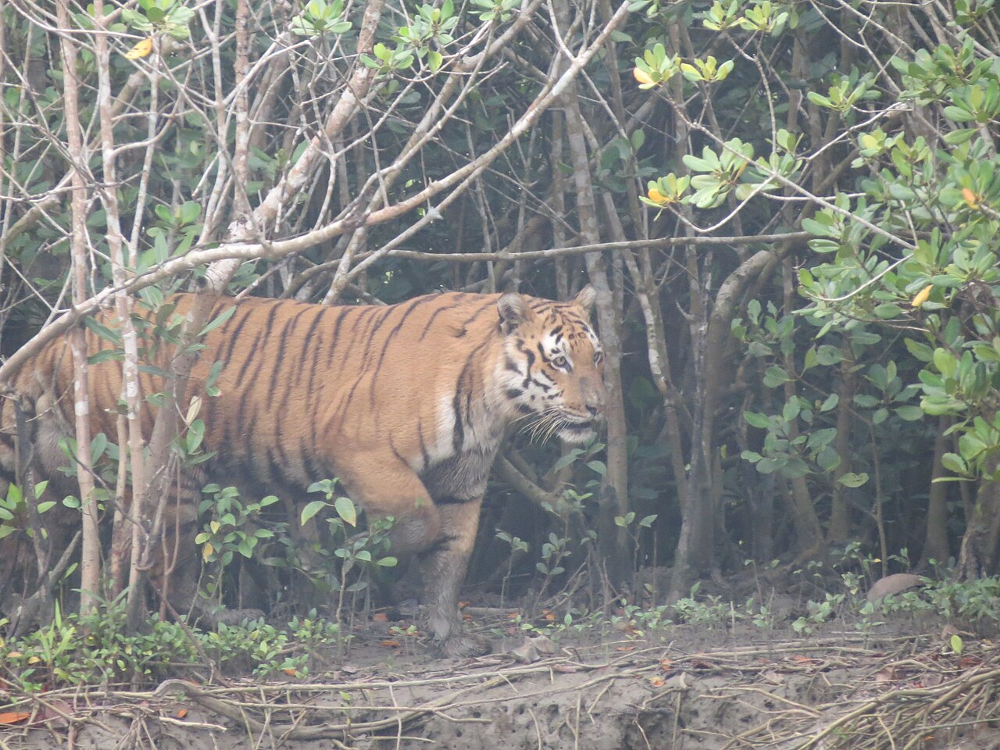

West Bengal is a state in the eastern portion of India. It is situated along the Bay of Bengal, along with a
population of over 91 million inhabitants within an area of 88,752 km2 (34,267 sq mi) as of 2011. The population
estimate as of 2023 is 99,723,000. West Bengal is the fourth-most populous and thirteenth-largest state by
area in India, as well as the eighth-most populous country subdivision of the world. As a part of the Bengal
region of the Indian subcontinent, it borders Bangladesh in the east, and Nepal and Bhutan in the north. It also
borders the Indian states of Jharkhand, Odisha, Bihar, Sikkim and Assam. The state capital is Kolkata, the
third-largest metropolis, and seventh largest city by population in India. West Bengal includes the Darjeeling
Himalayan hill region, the Ganges delta, the Rarh region, the coastal Sundarbans and the Bay of Bengal. The
state's main ethnic group are the Bengalis, with the Bengali Hindus forming the demographic majority.
